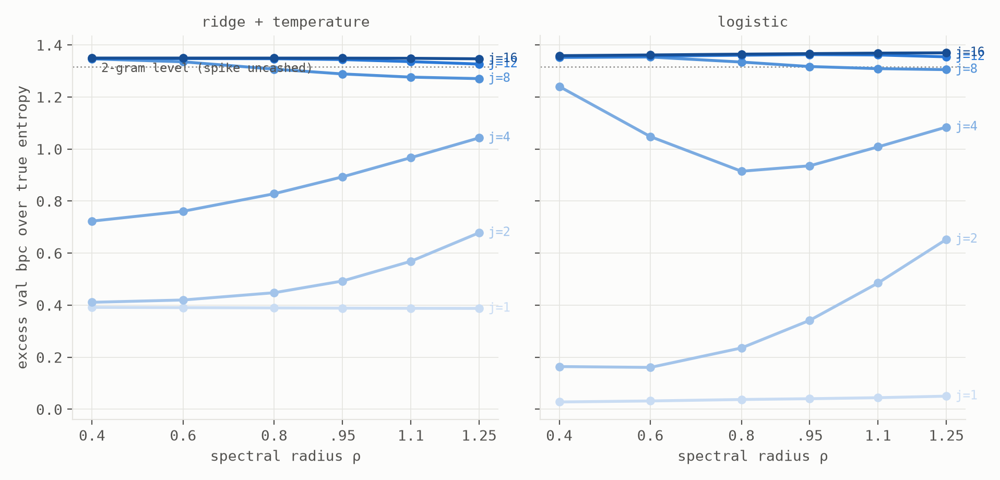
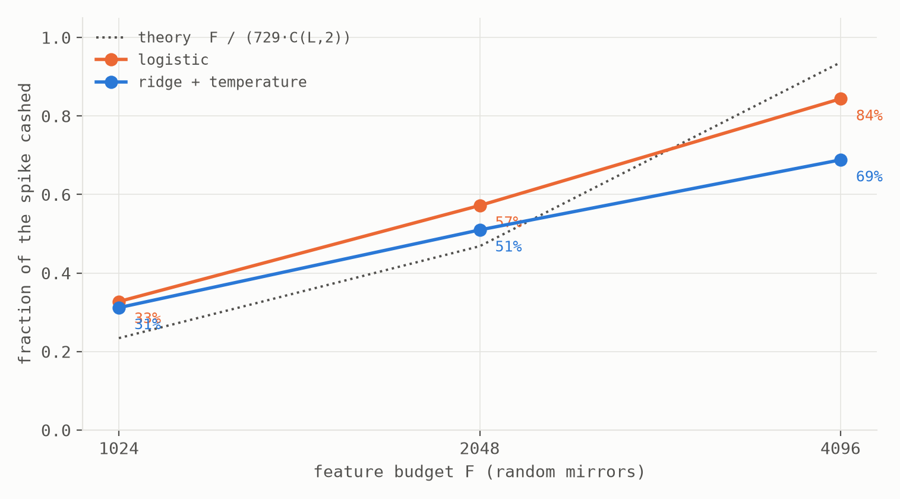

cd ~/experiments/readout-relative-edge && less note.txt
The Readout-Relative Edge
How much past should a machine hold? Not the machine's decision: it belongs to everyone who pays to read it.
Abstract. Across three companion notes, fixed random systems with trained readouts kept refusing the edge of chaos on text8, and kept walking back toward it when the readout improved. This note tests whether that pattern is a law by varying the task: spike sources c_t ~ T[c_{t−1}, c_{t−j}] with one shared table across depths j ∈ {2…16}, so entropy is matched, the prize at lag j is a constant 1.32 bits, and the generator's true entropy anchors every number. Two axes (an echo state network's spectral radius and a memoryless random-feature window) were swept against the depth dial under two readouts, with predictions pre-registered. Results. (1) The dial moves with the task: the reservoir's logistic optimum climbs ρ = 0.4 → 0.6 → 0.8 as j goes 1 → 2 → 4, and the window model's best width tracks L = j exactly until there is nothing left to buy. (2) Service is graded, and its price is measurable: the window model's capture of the spike follows F / (729·C(L,2)), a pre-registered scaling that landed inside both bands (33% → 57% → 84% as features doubled). (3) The interference clause is substrate-dependent: the reservoir's optimum migrates under a better readout; the automata ensemble's does not, its flat readout gap equaling the pure calibration tax; discrete memory has no crowding to relieve. (4) The optimizer is part of the readout: against registration, ridge out-cashes logistic at depth (and survives a tuning check) because early-stopped SGD is an implicit spectral filter that never reaches the low-variance interaction directions ridge solves in closed form. (5) A braiding horizon caps everything: at depth 8 the needed character is provably decodable from the state, yet no readout cashes more than ~4% at any spectral radius up to 1.8: the reservoir's nonlinear mixing horizon is far shorter than its linear memory horizon, and it does not yield to more recurrence. The law, in one sentence: a fixed random system should hold exactly as much past as its cheapest reader can afford to decode, and every term in that sentence (worth, cost, reader) is measurable.
§1 The claim, and a ruler with the answers printed on it
The companion notes established, on text8: an interior spectral-radius optimum under ridge; its migration toward criticality under logistic; a suffix-tree state geometry governing performance across substrates; a pure readout-calibration tax of 0.464 bpc isolated at feature-complete inputs; and an interference cost of held-but-unneeded past that appears even with no dynamics at all. All of it on one corpus whose useful context is ~3 characters, leaving open that every "law" was text8's shallowness in costume. So we built corpora whose memory demand is a dial:
c_t ~ T[ c_{t−1}, c_{t−j} ] j ∈ {2, 4, 8, 12, 16}, j=1 control
One conditional table T, drawn once and shared by every j: entropy rate matched (H ≈ 3.36 bits), local statistics matched, and the only thing that moves is where the past matters. The generator knows the truth, so every result is quoted as excess bpc over true entropy; the prize sitting at lag j is 1.317 ± 0.002 bits across the family (design gate, pre-registered, passed). A design surprise sharpened the instrument: marginalizing T makes the lag-1 term nearly worthless (~0.07 bits), so the entire prize lives in the joint pattern of two characters j apart. Axes: a tanh echo state network (N = 5000, ρ ∈ [0.4, 1.8]) and the funhouse window model (F random features on the last L characters), a machine with memory and no window against a machine with a window and no memory, each under ridge and logistic readouts, all predictions registered in the lab journal before their runs.
§2 The dial moves: memory is priced by the task
The registered kill condition (optima indifferent to j) is refuted on both axes. The reservoir's logistic optimum climbs ρ = 0.4 → 0.6 → 0.8 across j = 1 → 2 → 4, and at j = 8 both readouts push to the top of the grid chasing what little remains (Fig. 1). The window model is blunter still: its best width is exactly L = j at every depth it can serve; it stretches precisely to the spike, paying window tax only for cause, and collapses back to L = 2 at j = 16 when the spike is out of reach. On text8 the optimum sat low because three characters is what text8 pays for; move the pay and the optimum follows. The j = 1 control behaves perfectly: with nothing to remember, the memory dial goes flat.

§3 Service is graded: the starvation equation
The registered served-vs-abandoned cliff came back wrong in an instructive way: the window model does not cliff; it starves in place. Its argmin stays snapped to L = j while the fraction of the prize it cashes decays smoothly: 100% at j = 2, a third at 4, six percent at 8, one percent at 12. The mechanism is arithmetic: F random features must span a pairwise interaction space that grows as C(L,2)·729, so capture should scale as F / (729·C(L,2)). That equation was registered with bands and then tested by doubling F twice at j = 4: capture went 33% → 57% (band 55–70%) → 84% (band ≥80%), the program's first derived equation to survive its own quantitative test (Fig. 2).

§4 The interference clause is substrate-dependent
On text8, the reservoir's optimum migrates when ridge is replaced by logistic (ρ 0.6 → 0.95, with 42% of the high-ρ penalty surviving), the signature of interference a richer reader can relieve. The automata ensemble of the third companion refuses the same intervention: its optimum is pinned, and its logistic-over-ridge gap is flat across the entire order–chaos dial at 0.40–0.46 bpc, numerically the pure calibration tax the funhouse isolated (0.464). One substrate stores the past by graded superposition in a shared continuous state and pays crosstalk for it; the other heals into discrete suffix-determined configurations and pays none. The tax's existence is universal; its interference component is a property of how a substrate stores.
§5 The optimizer is part of the readout
The registration bet that the richer reader holds depth longer. Inverted: at j = 4 and 8 ridge out-cashes logistic (0.59 vs 0.40 bits at j=4), the program's first sustained ridge win, and a pre-committed tuning check (3× learning rate, 2.5× epochs, generous patience) recovered only 0.08 of the 0.44-bit gap, with a hotter rate doing worse. The reading was named before the check ran: early-stopped SGD is an implicit spectral filter. The spike's interaction signal lives in low-variance state directions whose gradients are tiny; within any practical budget SGD never digs them out, while ridge's closed form solves them exactly. Scope stated plainly: multinomial logistic is convex, so with unbounded budget it must eventually win. But unbounded budget is precisely what no reader has, and budget-relativity is this law's native vocabulary. "Readout family" means readout × optimizer × budget.
§6 The braiding horizon
The sharpest new object. At j = 8, the character eight steps back is comfortably within the reservoir's linear decode depth (9.3–12.7 characters at ρ ≥ 0.8, measured in the first companion note): a probe can read it. Yet the best any readout cashes is ~4%, at any ρ up to 1.8. The resolution: this task's prize requires the product of two characters, and no linear readout can multiply two decodable memories; the interaction must already exist in the state, formed by the dynamics' own nonlinear mixing. The reservoir braids adjacent characters nearly for free (88% at j=2), characters four apart at half strength, characters eight apart essentially not at all, and the pre-registered grid extension shows more recurrence does not help (flat top at ρ ≈ 1.25–1.4, then worse). The memory horizon and the mixing horizon are different lengths, and the short one pays. In hindsight the program had seen this twice: the reservoir's parity dominance (nonlinearly mixed lag information as its distinctive asset) and the funhouse's C(L,2) starvation are the same horizon seen from the dynamical and memoryless sides.
§7 The ledger, the limits, and the law
| registered | verdict |
|---|---|
| LR0: spike value constant across j (±0.02) | PASSED (±0.0024) |
| Kill condition: optima indifferent to j → no law | REFUTED: the dial moves, both axes |
| LR1: argmin ρ rises by j=4 (both readouts) | CONFIRMED logistic; VOID ridge (flat-control argmin: registration design flaw, admitted) |
| LR2: served→abandoned cliff; logistic abandons later | FALSIFIED: starvation, not cliffs; ordering INVERTED (→ §5) |
| LR3: funhouse argmin L = j, collapse beyond j* | CONFIRMED (location exact, collapse at 16); readout separation failed |
| LR4: "partial service" middle outcome | DOMINANT regime, both axes |
| Optimizer check: tuned logistic closes to ≤0.05 of ridge | MISSED: inversion stands; spectral-filter clause adopted |
| Braid extension: interior optimum in [1.25, 1.8] | CONFIRMED (flat top 1.25–1.4, then degradation) |
| Starvation scaling: 55–70% at F=2048, ≥80% at 4096 | CONFIRMED: both bands hit |
Limits. Spike sources concentrate all deep value at a single lag: the sharpest test and the least language-like; a decaying-utility family is the registered sequel. One reservoir size (N=5000), one seed per cell, one machine; the j=1 control's entropy differs from the family's and served only argmin comparisons; logistic conclusions are budget-scoped by construction (§5). The substrate clause (§4) rests on the two companion substrates measured at 2×10⁶ characters, single-seed on both sides.
Related work. Memory–nonlinearity trade-offs in reservoirs (Dambre et al.'s information processing capacity; Verstraeten et al.) are the nearest theory to the braiding horizon; §6 is a task-side measurement of that trade at controlled lag separation. Memory traces under interference: Ganguli & Sompolinsky. Next-generation reservoir computing (Gauthier et al.) anticipates window models as reservoir substitutes; the funhouse note repurposes them as null models. Edge-of-chaos computation (Langton; Packard; Kauffman) is the folklore all three companions measure against. The methodological instrument throughout is pre-registration with named middle outcomes; the falsifications in Table 1 are load-bearing, not decorative.
The law, final form. A fixed random system driven by a stream should hold exactly as much past as its readers can afford to decode. The task sets what the past is worth; the substrate sets the storage tax: crowding for superposed continuous states, nothing for healed discrete ones; the readout and its optimizer set which of the stored bits are reachable; and the dynamics' mixing horizon caps what can be braided together at all. The edge of chaos is not a place a system wants to be; it is the most memory anyone ever afforded.